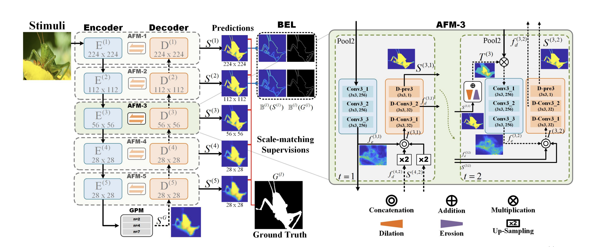
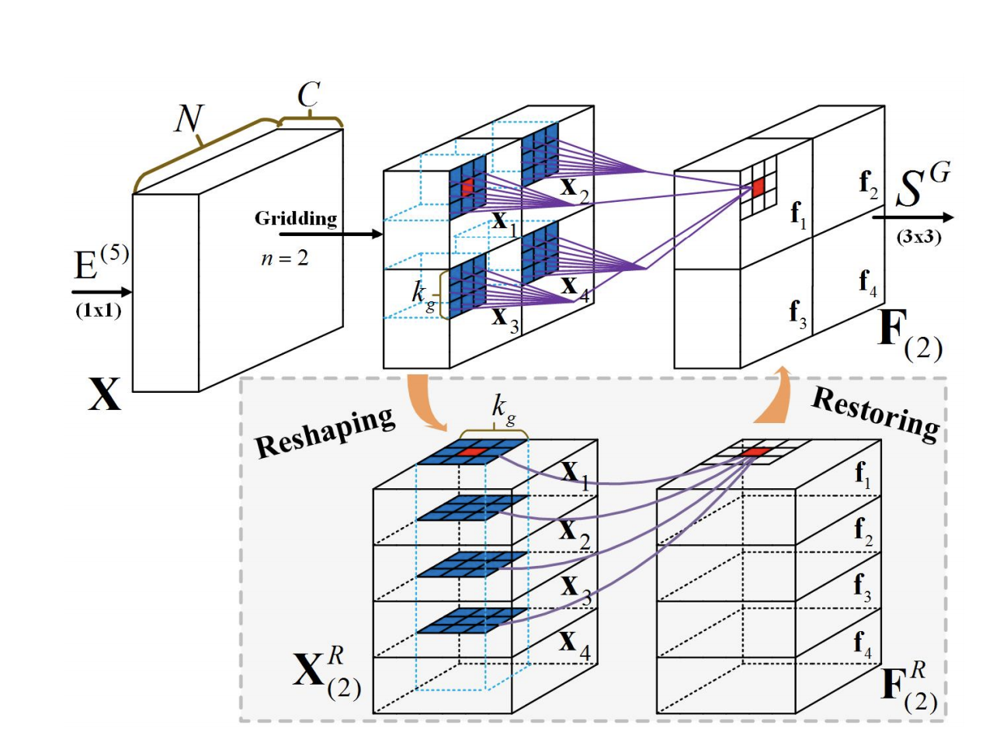

本文同样着眼于如何提高边界分类准确率。模型分为两部分，GPM（Global Perception Module）与AFMs（Attentive Feedback Modules），分别捕获全局及边界特征。本文也创新性的提出了Boundary-Enhanced Loss，显式地加强了模型对边界的学习能力。同时，本文强调了该模型不需要条件随机场等后处理措施，加快了运行速度。

文采用的特征提取网络为VGG16，而由图可知GPM也为类似U-net的Encoder-Decoder结构，不过有两处不同：1.shortcut部分进行了创新，替换为了AFM模块；2。最高级特征图通通过GPM连接而非直接连接。
首先，GPM部分的目的在于同时有效利用全局及局部特征，其首先将原特征图切分为n*n块，堆叠后进行卷积，然后变换回原维度，如图所示。

这种方法可以视为空洞卷积后，又对空洞卷积感受野中的每个点向周围进行了扩展，可以做到兼顾局部与全局特征。需要注意的是此处采用了多尺度方法，文中n有2，4，7三种取值，分别计算并拼接后通过3*3卷积处理得到预测特征图。
AFMs部分设计较为复杂，每个AFM均包含feedforward和feedback两个环节，分别对应图中的实线和虚线。feedforward环节中由于引入了上采样的高级特征图，得到的输出S并不准确，尤其是边界分类准确率差；为解决这一问题，AFM对前向步骤中得出的S分别进行腐蚀与膨胀操作，此步骤在实际中由最大池化改造而来。两者求平均后就得到了物体边缘所在区域，随后与输入特征图相乘并与downsampling分支特征拼接卷积后可得出更精细的特征图。需要注意，为保留足够多的物体边缘周边信息，腐蚀核必须小于膨胀核。（AFM部分虽然看懂了结构，但是感觉整个结构依然有些费解，不知道是怎么设计成这样的，尤其是运用腐蚀和膨胀的部分）
损失函数部分，Boundary-Enhanced Loss使用了均值滤波操作，与原图像做差后得到增强的边界特征，从而可以加强模型对边界处分类结果的敏感程度。此外，作者认为低级特征包含物体细节较高级特征而言更丰富，因此Boundary-Enhanced Loss只作用在VGG16最浅的两层特征图上，而普通的交叉熵损失函数则作用于全部5层，最终的损失函数为二者的加权求和。
模型在 ECSSD、PASCAL-S、DUT-OMRON、HKU-IS 和 DUTS上进行了测试，（按惯例）拥有超越SOTA的表现，224*224像素图像推断速度可达26fps（训练设备为双卡1080ti，推断设备未明确提及）.